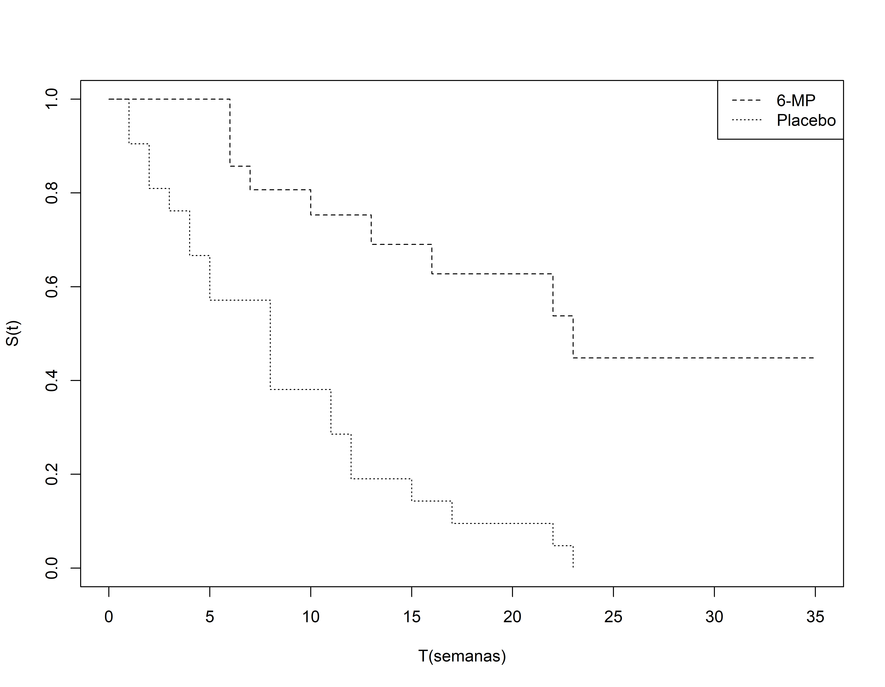

```{r}
library(survival)
tempo<- c(6,6,6,6,7,9,10,10,11,13,16,17,19,20,22,23,25,32,32,34,35)
status<- c(1,1,1,0,1,0,1,0,0,1,1,0,0,0,1,1,0,0,0,0,0)
tempo2<- c(1,1,2,2,3,4,4,5,5,8,8,8,8,11,11,12,12,15,17,22,23)
status2<- c(1,1,1,1,1,1,1,1,1,1,1,1,1,1,1,1,1,1,1,1,1)
tempo2g <- c(tempo,tempo2)
status2g <- c(status,status2)
grupos <- c(rep(1,21),rep(2,21))
dados <- data.frame(tempos=tempo2g, status=status2g, grupos=grupos)
ajusteKM <- survfit(Surv(tempos, status) ~ grupos, data=dados)
```Análise de Sobrevivência
Modelos não Paramétricos
Análise de Sobrevivência
Nesta apresentação vamos ver passo a passo como obter uma estimativa da curva de sobrevivência através do método de Kaplan-Meier.
Vamos inicialmente utilizar o pacote survival que é a principal referência em modelos de análise de sobrevivência.
Vamos usar neste exemplo dados de pacientes com leucemia.
O objetivo é verificar se o tratamento proposto, 6MP, tem efeito sobre a doença.
Existem dois grupos de pacientes:
- 21 receberam 6MP que é um medicamento para tratar leucemia
- Os outros 21 receberam placebo.
O evento falha aqui é ocorrer uma recaída na doença.
Método Kaplan-Meier
```{r}
plot(ajusteKM, xlab="T(semanas)",ylab="S(t)", lty=2:3)
legend("topright",c("6-MP","Placebo"), lty = 2:3)
```
Método Kaplan-Meier
```{r}
summary(ajusteKM)
```#> Call: survfit(formula = Surv(tempos, status) ~ grupos, data = dados)
#>
#> grupos=1
#> time n.risk n.event survival std.err lower 95% CI upper 95% CI
#> 6 21 3 0.857 0.0764 0.720 1.000
#> 7 17 1 0.807 0.0869 0.653 0.996
#> 10 15 1 0.753 0.0963 0.586 0.968
#> 13 12 1 0.690 0.1068 0.510 0.935
#> 16 11 1 0.627 0.1141 0.439 0.896
#> 22 7 1 0.538 0.1282 0.337 0.858
#> 23 6 1 0.448 0.1346 0.249 0.807
#>
#> grupos=2
#> time n.risk n.event survival std.err lower 95% CI upper 95% CI
#> 1 21 2 0.9048 0.0641 0.78754 1.000
#> 2 19 2 0.8095 0.0857 0.65785 0.996
#> 3 17 1 0.7619 0.0929 0.59988 0.968
#> 4 16 2 0.6667 0.1029 0.49268 0.902
#> 5 14 2 0.5714 0.1080 0.39455 0.828
#> 8 12 4 0.3810 0.1060 0.22085 0.657
#> 11 8 2 0.2857 0.0986 0.14529 0.562
#> 12 6 2 0.1905 0.0857 0.07887 0.460
#> 15 4 1 0.1429 0.0764 0.05011 0.407
#> 17 3 1 0.0952 0.0641 0.02549 0.356
#> 22 2 1 0.0476 0.0465 0.00703 0.322
#> 23 1 1 0.0000 NaN NA NATeste do log-rank
```{r}
survdiff(Surv(tempos, status) ~ grupos, data=dados)
```#> Call:
#> survdiff(formula = Surv(tempos, status) ~ grupos, data = dados)
#>
#> N Observed Expected (O-E)^2/E (O-E)^2/V
#> grupos=1 21 9 19.3 5.46 16.8
#> grupos=2 21 21 10.7 9.77 16.8
#>
#> Chisq= 16.8 on 1 degrees of freedom, p= 4e-05Teste do log-rank usando pesos
Quando usamo rho=0, o teste é identico ao log-rank padrão
```{r}
# rho=0 é o teste de log-rank
survdiff(Surv(tempos, status) ~ grupos, rho=0, data=dados)
```#> Call:
#> survdiff(formula = Surv(tempos, status) ~ grupos, data = dados,
#> rho = 0)
#>
#> N Observed Expected (O-E)^2/E (O-E)^2/V
#> grupos=1 21 9 19.3 5.46 16.8
#> grupos=2 21 21 10.7 9.77 16.8
#>
#> Chisq= 16.8 on 1 degrees of freedom, p= 4e-05Usando pesos de Peto&Peto (HF)
Quando usamo rho=1, ele se torna do teste de log-rank usando os pesos de Peto&Peto
```{r}
# rho=1 é o teste de Peto&Peto
survdiff(Surv(tempos, status) ~ grupos, rho=1, data=dados)
```#> Call:
#> survdiff(formula = Surv(tempos, status) ~ grupos, data = dados,
#> rho = 1)
#>
#> N Observed Expected (O-E)^2/E (O-E)^2/V
#> grupos=1 21 5.12 12.00 3.94 14.5
#> grupos=2 21 14.55 7.68 6.16 14.5
#>
#> Chisq= 14.5 on 1 degrees of freedom, p= 1e-04Teste do Log-rank para mais de 2 grupos
Vamos usar neste exemplo os dados de um estudo experimental com camundongos conduzido no Centro de Pesquisas René Rachou, FioCruz, MG.
44 camundongos foram infectados pela malaria (Plasmodium berguei) e aleatoriamente alocados em três grupos:
Grupo 1: Imunizados 30 dias antes da infecção pela malária. Foram infetados também por esquistossomose.
Grupo 2: Controle (Somente infectado pela malária)
Grupo 3: Infectado pela malária e ela esquistossomose.
Teste do Log-rank para mais de 2 grupos
A resposta foi o tempo decorrido desde a infecção pela malária até a morte do camundongo. O tempo foi medido em dias e o estudo foi acompanhado por 30 dias.
Vamos adotar um nível de significância de 0,05 para avaliar a diferença entre as curvas, ou seja, se a estatística de log-rank tiver um valor menor que 0,05, vamos rejeitar a hipótese nula.
Método Kaplan-Meier
```{r}
tempos <- c(7,8,8,8,8,12,12,17,18,22,30,30,30,30,30,30,8,8,9,
10,10,14,15,15,18,19,21,22,22,23,25,8,8,8,8,8,8,
9,10,10,10,11,17,19)
status <- c(rep(1,10), rep(0,6), rep(1,15), rep(1,13))
grupos <- c(rep(1,16), rep(2,15), rep(3,13))
dados2 <- data.frame(tempos, status, grupos)
ajusteKM2<- survfit(Surv(tempos, status) ~ grupos, data = dados2)
```Teste do log-rank
survdiff(Surv(tempos, status) ~ grupos, data = dados2, rho=0)#> Call:
#> survdiff(formula = Surv(tempos, status) ~ grupos, data = dados2,
#> rho = 0)
#>
#> N Observed Expected (O-E)^2/E (O-E)^2/V
#> grupos=1 16 10 17.00 2.8816 6.4111
#> grupos=2 15 15 14.51 0.0167 0.0317
#> grupos=3 13 13 6.49 6.5190 10.4447
#>
#> Chisq= 12.6 on 2 degrees of freedom, p= 0.002Avaliação
Como a hipótese nula foi rejeitada precisamos avaliar se todas as curvas de sobrevivência são diferentes. Para isto vamos fazer comparações, duas a duas, utilizando o método de Bonferroni.
Como existem três grupos, são três as comparações duas a duas.
O nível de significância a ser adotado nestas comparações é de \(\alpha\) = 0,05/3 = 0,017. Isto vai garantir uma conclusão geral ao nível máximo de 0,05.
Grupos 1 e 2
survdiff(Surv(tempos, status) ~ grupos, data = subset(dados2, grupos!=3), rho=0)#> Call:
#> survdiff(formula = Surv(tempos, status) ~ grupos, data = subset(dados2,
#> grupos != 3), rho = 0)
#>
#> N Observed Expected (O-E)^2/E (O-E)^2/V
#> grupos=1 16 10 13.7 1.01 2.53
#> grupos=2 15 15 11.3 1.23 2.53
#>
#> Chisq= 2.5 on 1 degrees of freedom, p= 0.1Grupos 1 e 3
survdiff(Surv(tempos, status) ~ grupos, data = subset(dados2, grupos!=2), rho=0)#> Call:
#> survdiff(formula = Surv(tempos, status) ~ grupos, data = subset(dados2,
#> grupos != 2), rho = 0)
#>
#> N Observed Expected (O-E)^2/E (O-E)^2/V
#> grupos=1 16 10 15.34 1.86 7.86
#> grupos=3 13 13 7.66 3.72 7.86
#>
#> Chisq= 7.9 on 1 degrees of freedom, p= 0.005Grupos 2 e 3
survdiff(Surv(tempos, status) ~ grupos, data = subset(dados2, grupos!=1), rho=0)#> Call:
#> survdiff(formula = Surv(tempos, status) ~ grupos, data = subset(dados2,
#> grupos != 1), rho = 0)
#>
#> N Observed Expected (O-E)^2/E (O-E)^2/V
#> grupos=2 15 15 20.53 1.49 7.98
#> grupos=3 13 13 7.47 4.08 7.98
#>
#> Chisq= 8 on 1 degrees of freedom, p= 0.005Curva de Sobrevivência estratificada
Neste exemplo temos 2 tratamentos, mas queremos controlar os resultados considerando uma variável categórica (sexo).
O evento estudado é o tempo até a recaída de leucemia.
O conjunto de dados tem os seguintes informação:
- tempo (semanas)
- status (0 = censura e 1 = falha)
- sexo (0 = mulher e 1 = homem)
- logwbc = log do número de células brancas
- Rx (0 = Novo tratamento e 1 = Placebo)
Vamos ver como isto pode ser feito na função survfit.
Curva de Sobrevivência estratificada
```{r}
library(readxl)
dados_a <- read_xlsx("anderson.xlsx", col_names=T)
ajusteKM_S <- survfit(Surv(tempo, status) ~ Rx + strata(sexo), data = dados_a)
summary(ajusteKM_S)
```#> Call: survfit(formula = Surv(tempo, status) ~ Rx + strata(sexo), data = dados_a)
#>
#> Rx=0, strata(sexo)=sexo=0
#> time n.risk n.event survival std.err lower 95% CI upper 95% CI
#> 6 11 2 0.818 0.116 0.619 1
#> 7 8 1 0.716 0.140 0.488 1
#> 10 6 1 0.597 0.159 0.353 1
#> 13 3 1 0.398 0.194 0.153 1
#>
#> Rx=0, strata(sexo)=sexo=1
#> time n.risk n.event survival std.err lower 95% CI upper 95% CI
#> 6 10 1 0.900 0.0949 0.732 1
#> 16 9 1 0.800 0.1265 0.587 1
#> 22 7 1 0.686 0.1515 0.445 1
#> 23 6 1 0.571 0.1638 0.326 1
#>
#> Rx=1, strata(sexo)=sexo=0
#> time n.risk n.event survival std.err lower 95% CI upper 95% CI
#> 5 11 1 0.9091 0.0867 0.7541 1.000
#> 8 10 3 0.6364 0.1450 0.4071 0.995
#> 11 7 2 0.4545 0.1501 0.2379 0.868
#> 12 5 2 0.2727 0.1343 0.1039 0.716
#> 15 3 1 0.1818 0.1163 0.0519 0.637
#> 17 2 1 0.0909 0.0867 0.0140 0.589
#> 22 1 1 0.0000 NaN NA NA
#>
#> Rx=1, strata(sexo)=sexo=1
#> time n.risk n.event survival std.err lower 95% CI upper 95% CI
#> 1 10 2 0.8 0.1265 0.5868 1.000
#> 2 8 2 0.6 0.1549 0.3617 0.995
#> 3 6 1 0.5 0.1581 0.2690 0.929
#> 4 5 2 0.3 0.1449 0.1164 0.773
#> 5 3 1 0.2 0.1265 0.0579 0.691
#> 8 2 1 0.1 0.0949 0.0156 0.642
#> 23 1 1 0.0 NaN NA NATeste do log-rank
survdiff(Surv(tempo, status) ~ Rx, data = dados_a)#> Call:
#> survdiff(formula = Surv(tempo, status) ~ Rx, data = dados_a)
#>
#> N Observed Expected (O-E)^2/E (O-E)^2/V
#> Rx=0 21 9 19.3 5.46 16.8
#> Rx=1 21 21 10.7 9.77 16.8
#>
#> Chisq= 16.8 on 1 degrees of freedom, p= 4e-05survdiff(Surv(tempo, status) ~ Rx + strata(sexo), data = dados_a)#> Call:
#> survdiff(formula = Surv(tempo, status) ~ Rx + strata(sexo), data = dados_a)
#>
#> N Observed Expected (O-E)^2/E (O-E)^2/V
#> Rx=0 21 9 16.5 3.44 9.7
#> Rx=1 21 21 13.5 4.23 9.7
#>
#> Chisq= 9.7 on 1 degrees of freedom, p= 0.002